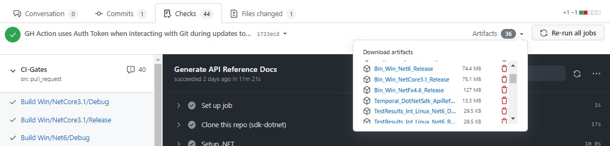

Using the Temporal SDK for .NET.
Installation
The SDK is currently in development and we will release NuGet packages very soon. At that time we will also publish official releases on our Github repository.
In the meantime you can install the SDK using one of the following approaches:
Clone the SDK repo and build the SDK.
Instructions for building the SDK on your local machine are found in the Contribution Guide.Download a build artifact from a recent commit into the
masterbranch.
To do that:- View the list of Pull Requests recently merged into
master:
https://github.com/temporalio/sdk-dotnet/pulls?q=is%3Apr+is%3Aclosed+base%3Amaster - Click on a Pull Request from that list.
- Click on the Checks tab.
- Click on the Artifacts drop-down.
- You will see a list of artifacts produced by building the branch after merging the PR you selected.
- The Artifacts starting with
Bin_contain the built SDK binaries (most likely, you are looking for these). - The Artifacts starting with
TestResults_contain the results of running tests that are part of our Continuous Integration pipeline. - The
Temporal_DotNetSdk_ApiReferenceartifact contains the API Reference Documentation site generated during the build. (You may be reading the hosted version of it right now. If not, it's here.)
- The Artifacts starting with
- For example:

- View the list of Pull Requests recently merged into
{kind=link}
Usage
To get started with using the SDK in your app, please see the usage samples:
Simple usage scenarios for the Workflow Client.
SeePart1_SimpleClientUsage.cs.
Demonstrated scenarios:- Create workflow client that eagerly validate the connection.
- Create a workflow client that validates the connection during the initial remote call.
- Start a new workflow.
- Access and interact with an existing workflow.
- Obtain the result of a workflow.
- Send a signal to a workflow.
- Query a workflow.
- Cancel a workflow.
- Terminate a workflow.
Advanced usage scenarios for the Workflow Client.
SeePart2_AdvancedClientUsage.cs.
Demonstrated scenarios:- Get detailed information about a workflow; for example, Task Queue Name and Kind.
- Get the Status of a workflow.
- Get the Type Name of a workflow.
- Check whether a workflow with a particular workflow-id exists.
- Wait for a workflow to conclude without accessing its result.
- Request a workflow cancellation and wait for the cancellation to occur for a certain amount of time, while interactively displaying progress status. If the workflow does not respect the cancellation request within a particular time, terminate the workflow.
- Alternative methods for starting a workflow.
Using the Workflow Client to work with individual Workflow Runs (read more about Workflows, -Chains and -Runs within the Temporal data model).
SeePart3_AddressIndividualRuns.cs.
Demonstrated scenarios:- Obtain a handle for a specific Workflow Run; get the Status of a particular Workflow Run.
- Obtain the result of a particular Workflow Run, without following the Workflow Chain.
- Address specific Runs within a Workflow Chain.
- Interact with Workflow Runs: send Signals, execute Queries, request Cancellation, obtain Description, Terminate, await Conclusion.
- Obtain immediate results if available, without performing long-running remote calls.
- Navigate across Workflow Chains, Runs, and back.